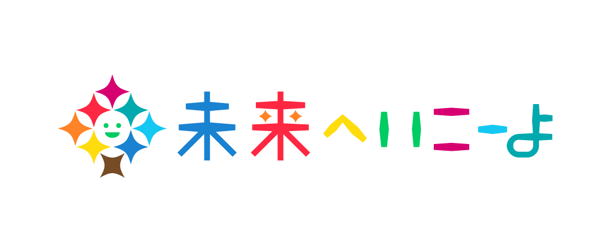

| 2013 | はずるマスター認定者一覧 (
| 2013 | はずるマスター認定者一覧 (  )
) | 2014 | Faces of Gengo: Adrián (
 )
) | 2018 | Investigación y tecnología: Adrián Jiménez Pascual (
 )
) | 2018 | Jóvenes españoles en la meca tecnológica y científica de Japón (
) | 2021 |
 Gengo's Language Specialists -
Gengo's Language Specialists -  Gengo's Language Specialists ( )
Gengo's Language Specialists ( )  | 2021 | 子どもの「好き」の育て方！世界的な評価を受けるパズルクリエイターはいかにして生まれたか？ (
)
| 2015 | Adrián, un matemático madrileño en Tokyo (
) | 2018 | Descubre cómo es la investigación científica en Japón según Talento J (
) | 2019 | Community Competition – One Year Anniversary (
)